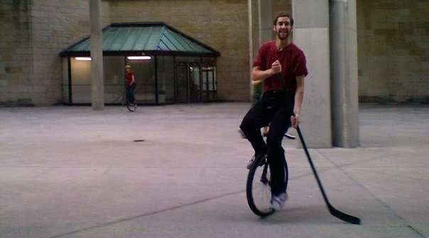

Bio
Tyler completed his Ph.D. at the University of Wisconsin-Madison in 2016, where he was advised by professors Andrea C. Arpaci-Dusseau and Remzi H. Arpaci-Dusseau and did research on containers and serverless computing. After graduation, he worked on Azure SQL at Microsoft Gray Systems Lab, and is now returning this fall to UW-Madison as an instructor. Tyler is actively involved in two open-source projects, the Pivot Libre project for preferential voting (https://github.com/pivot-libre) and the OpenLambda project (https://github.com/open-lambda).
